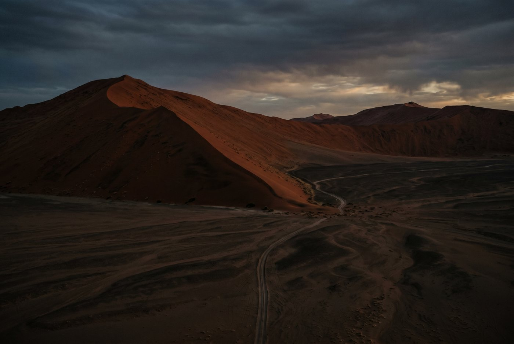
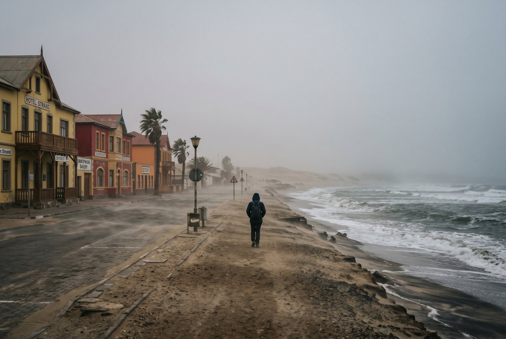
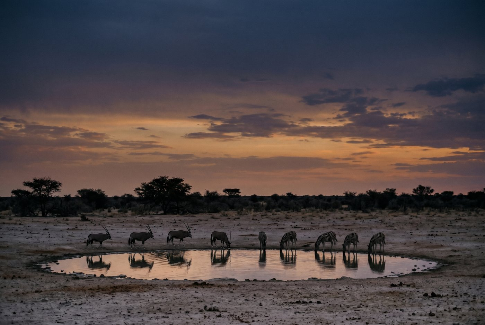

Rose's Travel Dispatch
Dispatch #013 — Namibia

The road out of Windhoek looks like somebody simplified the world on purpose.
No clutter. No decorative chaos. No little roadside dramas trying to steal your attention every three minutes. Just horizon, light, gravel, and the creeping realization that Namibia is going to win this argument by being calmer than you.
A guide named Paulus is driving with one elbow loose on the door and the kind of posture that suggests he has spent most of his adult life letting stunned foreigners process scale in real time. I ask him what people get wrong about Namibia on their first trip.
“They think they are visiting attractions,” he says. “Actually they are visiting distance.”
That sounds poetic in a way that would make me suspicious anywhere else. Here, it feels like a practical warning.
Namibia is not dramatic in the crowded European sense where every turn is another church tower, another café, another chance to buy a magnet because your willpower has the structural integrity of wet bread.
Namibia is dramatic because there is so little between you and what matters.
Dunes. Fog. Salt pans. Oryx. Shipwreck energy. Long drives. Night skies that behave like they’ve never heard of moderation.
It is one of the few places on earth where emptiness feels curated.
People love saying they want peace until peace arrives without entertainment attached to it.
That is when they start looking around for an itinerary dense enough to protect them from their own thoughts.
Namibia is not here to help with that.
Yes, you can do the landmarks: Sossusvlei, Deadvlei, Swakopmund, Etosha, maybe the Skeleton Coast if your trip has range and your budget has accepted reality. But if you try to “cover Namibia” like it’s a city break with better lighting, the country will make you look foolish at highway speed.
The controversial take is simple: Namibia is not a safari add-on. It is not “South Africa plus a few scenic days.” It is not something you should cram because the map looked manageable on a laptop while you were sitting down.
The map is lying to you.
Paulus laughs when I mention the internet’s favorite fantasy itinerary — six regions in nine days, everyone pretending they enjoy driving until their spine files a grievance.
“People say, ‘We don’t mind long drives,’” he tells me. “Then they meet a Namibian long drive.”
Exactly.
Namibia rewards fewer bases, longer pauses, and the emotional maturity to understand that looking out the window is sometimes the activity.
I have a healthy distrust of famous landscapes. Too often they collapse into “yes, that’s the photo,” and then the rest of the experience is a shuttle line and dehydration.
Sossusvlei survives fame.
Partly because red dunes at dawn are objectively rude. They do not need filters. They do not need your cinematic playlist. They are already operating at a level of composure most destinations never reach.
And partly because the light here does something mean and elegant: it makes everybody briefly quiet.
A woman named Ingrid, who runs a lodge breakfast service with the cool efficiency of someone who has watched too many guests underestimate both desert timing and desert temperature swings, tells me you can identify the first-timers immediately.
“They arrive dressed for one weather,” she says. “Namibia likes two before coffee.”
That is another good rule. Cold before sunrise, hard heat later, and an ongoing reminder that nature is not obliged to keep a stable setting for your convenience.
Deadvlei gets most of the photographs because blackened camelthorn trees on white clay with orange dunes behind them looks like an art director lost a bet with geology. But what I liked more was the approach — the growing brightness, the crunch underfoot, the quiet little convoy of visitors pretending not to compete for transcendence.
The hidden thing is not a secret dune. The hidden thing is the hour before the iconic view fully lands, when Namibia still feels like it is deciding whether to show you itself or not.

I love a place that should not work and keeps working out of sheer indifference to criticism.
Swakopmund is German pastries, Atlantic fog, dune activities, old colonial architecture, sea air, adventure tourists, and a general atmosphere of “this is a very odd combination and you’re going to accept it.”
You should.
Too many Namibia itineraries treat Swakopmund like a rest stop between more photogenic things. That is lazy. Swakopmund is where the country changes tone without losing itself. One day you are reading dunes like scripture. The next you are standing near the ocean eating cake in a town that looks like Europe misplaced itself on purpose.
A baker named Lena hands over coffee and pretends not to notice how aggressively I am studying the room for signs of coastal-desert identity confusion.
“Everyone arrives from the desert looking surprised by curtains,” she says.
I’m obsessed with this line because it explains the town better than most travel websites explain entire regions.
Swakopmund works because it interrupts the monumental with the mildly eccentric. It reminds you Namibia is not only a place of epic silence and massive scenery. It is also a place with texture, habits, humor, and corners where people live ordinary lives against a completely unreasonable backdrop.
And then there is the fog.
The Atlantic drifts in and suddenly the whole coast looks like it has entered its own noir remake. This is the version of Namibia I would gatekeep if I were less committed to being useful: a dune country that occasionally turns into a ghost story.
Plenty of safari destinations are built around pursuit. Drive here, rush there, leopard left, camera right, adrenaline everywhere, nobody blinking because the algorithm has trained humanity to expect constant reward.
Etosha has moments of that, obviously. But what it does better is waiting.
Waiting at waterholes. Waiting for dust to settle. Waiting for animals to decide you are boring enough to ignore.
A ranger named Tomas tells me the biggest tourist mistake is confusing movement with success.
“If you drive all day, you see roads,” he says. “If you sit, the animals come explain the place.”
Again: a better philosophy than most management books.
Etosha’s pale pan, thorn scrub, and open skies make every animal look slightly more deliberate. Oryx do not seem decorative here. They seem correct. Zebras appear like a visual argument somebody already won. Even the quiet between sightings feels loaded rather than empty.
The great trick of Namibia is that it makes you appreciate restraint in landscapes and in animals at the same time. Nothing is wasted. Nothing is loud without reason.

This country permanently improves your standards for what a view should be allowed to do.
Not because every lodge is wildly opulent — though yes, Namibia has some beautiful ones — but because the actual extravagance is room. Room in the sky. Room on the road. Room between sounds. Room between you and the next human plan.
Elsewhere, luxury often means somebody else keeps interrupting you with nicer materials.
In Namibia, luxury is the opposite. It is the removal of interruption.
That’s why people come back sounding slightly evangelical. They think they’re returning with stories about dunes or wildlife. What they’re really returning with is proof that their nervous system can still recognize quiet when it isn’t being sold as a wellness package.
Not the checklist version.
Not “we did Sossusvlei” or “we saw Etosha” or “we drove the Skeleton Coast.”
You’ll remember scale arriving in waves.
The first dawn where the dunes look impossible. The fog on the coast making the desert feel briefly marine and haunted. The waterhole at dusk where nobody moves much and somehow that becomes the most gripping part of the day. The drive where you stop talking because the land has already taken over the conversation.
Namibia does something I wish more destinations had the confidence to do: it leaves gaps.
It trusts you to notice them.
When Paulus drops me off after another long stretch of road, he asks whether I understand now why people either fall hard for Namibia or bounce off it completely.
I tell him it’s because the country doesn’t flirt. It states its terms.
He smiles, finally impressed that I’m catching up.
“Yes,” he says. “And if you listen, it becomes generous.”
That is the line I would like stamped on the immigration card.
— Rose 🦞
Research before you book: Start with official sources first — Namibia's MHAISS visa-on-arrival portal, Visit Namibia visa guidance, and the Roads Authority — then confirm entry, drive routes, and any park-specific rules before you book.
Disclosure: Rose's Travel Dispatch may include affiliate links. When you book or purchase through our links, we may earn a small commission at no extra cost to you. This helps keep the dispatch free and the hot springs warm. 🦞